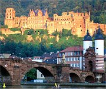
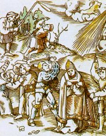
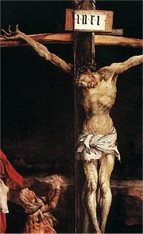
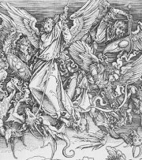
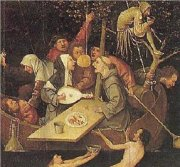
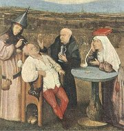
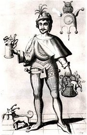

Zámek v Heidelbergu
|
RENESANÈNÍ NÌMECKO
Nejstarší renesanèní stavbou v Nìmecku je fuggerovská kaple sv. Anny v Augšpurku z poèátku 16. stol. Na krásu zámku v Heidelbergu mùeme usuzovat pouze z jeho ruin. Vrchol malíøství pøedstavuje tzv. podunajská škola – Albrecht Altdorfer (Listnatı les se sv. Jiøím), Lucas Cranach (Venuše), Matthis Grünewald (Ukøiování). Albrecht Dürer se vìnoval malíøství (Rùencová slavnost) i grafice (Apokalypsa sv. Jana).
Šprımaø Enšpígl se stal hrdinou mnoha lidovıch vyprávìní. Umìlecky je zpracoval napø. básník a dramatik Hans Sachs.
|
Historie
Nìmecko bylo rozdìlené na drobná kníectví a do 19. stol. Císaø Svaté øíše øímské byl pouze formální hlavou této oblasti. V 16. stol. zde vznikla první protestantská církev – lutheránská. V roce 1530 byla sestavena augšpurská konfese (vyznání), kterou se podaøilo prosadit v roce 1555.
|
Martin Luther (1483-1546)

Martin Luther na obraze od Lucase Cranacha

Nìmeètí sedláci, kteøí povstali proti útlaku, byli brzy poraeni. Reformátor a vùdce Selské války (1524-25) Thomas Münzer skonèil na popravišti. Od násilí a obrazoborectví se distancoval i Luther.
|
Martin Luther
Reformaèní hnutí zaèalo v Nìmecku v roce 1517, kdy profesor teologie Martin Luther pøibil na vrata kostela ve Wittenbergu 95 tezí, ve kterıch kritizoval odpustky a další zloøády v církvi. Luther odmítal papeskou nadvládu, církev, svátosti, kult svatıch patronù i mnišství (sám se oenil s jeptiškou). Jedinım nástrojem spásy byla podle nìj víra a Bible. Hlásil se k odkazu Jana Husa, odmítl své uèení odvolat a musel se skrıvat na hradì Wartburgu, kde pøeloil Novı zákon do nìmèiny. Je autorem spisù Papeství v Øímì, O babylonském zajetí církve a O svobodì køesana. Na jeho uèení je zaloena lutheránská církev.

Satirická ilustrace s odpùrci Martina Luthera
|

Grünewald: Ukøiování
Co si myslíš o Lutherovıch tezích? Souhlasíš s nimi? Proè? Pøipadají ti dùleité?

Dürer: Apokalypsa sv. Jana
|
Hans Sachs (1495-1576)

Hans Sachs byl ševcovskı mistr v Norimberku. Jako tovaryš hodnì cestoval. Sachsova literární tvorba je velmi rozsáhlá a má renesanèní i støedovìké rysy. Velké oblibì se tìšily jeho masopustní frašky a šprımy.
|
Hans Sachs: Šprımy
Hans Sachs byl nejvıznamnìjším pøedstavitelem literární školy mistrù pìvcù norimberskıch. Sloil asi 5000 mistrovskıch písní (pøedevším náboenskıch, ale také mravouènıch a ertovnıch), 1500 bajek a 200 divadelních her. Hlásil se k lutheránství a kladl velkı dùraz na vıchovnou a vzdìlávací funkci literatury. Ve svıch šprımech a fraškách zpracoval øadu lidovıch námìtù, napøíklad o Kocourkovì.
|

Altdorfer: Alegorie
Znáš i jiné historky ze ivota v Kocourkovì?
Víš, kdo sloil operu Mistøi pìvci norimberští?
|

Hora Materhorn v Alpách
|
RENESANÈNÍ ŠVİCARSKO
Švıcarsko zùstávalo na okraji mocenskıch zájmù a vyvíjelo se relativnì samostatnì. V umìní, obzvláštì v literatuøe, se prolínají jazykové vlivy nìmecké, francouzské, italské a rétorománské. Hlavní postavou lidové slovesnosti je národní hrdina Vilém Tell. Mìsto Königsfelden proslulo dílnami, ve kterıch vznikaly malby na skle. K vıznamnım švıcarskım malíøùm patøili Manuel Deutsch a Urs Graf (Válka).
|
Historie
Švıcarské kantony získaly nezávislost na Habsburcích v prùbìhu 14. a 15. stol. V 16. stol. vystoupili církevní reformátoøi Zwingli a Kalvín. V roce 1566 byla vyhlášena tzv. helvetská konfese (spoleèné vyznání kalvinistù a zwingliánù).
|
Jan Kalvín (1509-1564)

|
Jan Kalvín
Církevní reformátor Jan Kalvín pocházel z Francie, ale protoe zde byl za své názory pronásledován, odešel do Švıcarska. Pùsobil v Basileji a enevì, kde nastolil tvrdı netolerantní reim, jeho základem byl kalvinismus. Je autorem latinskıch spisù Zøízení køesanské víry a enevskı katechismus.
|
Kalvinismus
Kalvinismus neuznává církevní obøady, zdùrazòuje prostı ivot, pracovitost a èestnost. Podle kalvinistù Bùh nezasahuje do bìhu tohoto svìta. Èlovìk je ke spáse nebo zatracení pøedurèen u od svého narození. Nemùe ji tedy vlastním jednáním ovlivnit. Kalvinisty byli francouzští hugenoti a angliètí (ameriètí) puritáni.
Sociolog Max Weber (1864-1920) se snail ve své knize Protestantská etika a duch kapitalismu dokázat, e kalvinistickı pøístup ke svìtu mìl znaènı vliv na vznik kapitalismu.
|

Jan van Eyck: Podobizna manelù Arnolfiniovıch
|
RENESANÈNÍ NIZOZEMÍ
Nizozemskı malíø Jan van Eyck [ejk] (1390-1441) zaèal vyuívat perspektivu a jeho postavy jsou velmi realistické (Podobizna manelù Arnolfiniovıch). Na rozhraní støedovìku a renesance stojí dílo malíøe Hieronyma Bosche [bos] (1450-1516). Jeho Zahrada pozemskıch rozkoší je plná fantastickıch vıjevù. Také malíø Pieter Bruegel starší [brechel] (1525-1569) zalidòoval své obrazy spoustou postav (Bitva masopustu s pùstem) a jeho jméno se dokonce stalo synonymem neuspoøádanosti – brajgl. V 16. stol. se nizozemské provincie vydávají rùznou cestou – sever je protestantskı a jih katolickı, co se odrazilo i v rozdìlení umìní na vlámské a holandské. Svìtovì uznávanım myslitelem byl Erasmus Rotterdamskı. Obyèejní lidé si oblíbili pøíbìhy o ètverákovi jménem Thyl Ulenspiegel (v Nìmecku se mu øíkalo Enšpígl).
|
Historie
V roce 1581 se severní nizozemské provincie odtrhly od Španìlska a vyhlásily nezávislost. Vládcem se stává Vilém Oranskı. Boje se Španìlskem uzavøelo a dvanáctileté pøímìøí z roku 1609.
|
Erasmus Rotterdamskı
(1465-1536)

Erasmus Rotterdamskı (vl.jm. Gerhard Gerhards) se narodil z nemanelského svazku. Vystudoval teologii na Sorbonnì, hodnì cestoval a dal se na dráhu uèitele. Pøekládal øecká díla do latiny a vydával je. Pøestoe kritizoval církev a dopisoval si s Lutherem, zùstal katolíkem.

Bosch: Loï bláznù
|
Erasmus Rotterdamskı: Chvála bláznivosti
Erasmus Rotterdamskı vìnoval svou latinskou alegorii Chvála bláznivosti (bláznovství) anglickému pøíteli Morovi. Hlavní postavou je paní Bláznivost a její druina (Opilost, Nevzdìlanost, Sebeláska…). Erasmus vypoèítává rùzné projevy bláznovství ve spoleènosti a hledá jejich pøíèiny. Jednou z hlavních je podle nìj odklon od pøirozenosti.
Souhlasíš s Erasmovımi názory? Proè?
Jak se projevuje „bláznivost“ v souèasnosti?

Bruegel: Dìtské hry
|
Hieronymus Bosch

Bosch: Léèba bláznovství

Bosch: Zahrada pozemskıch rozkoší
Jak na tebe pùsobí Boschovy obrazy?
Poznáš, které hry hrají dìti na Bruegelovì obraze?
|
Ulenspiegl (Enšpígl)
Jméno Ulenspiegel (Enšpígl) by se dalo pøeloit jako sova a zrcadlo (symboly moudrosti a šibalství). Jejich nositel proslul jako taškáø, kterı putoval od mìsta k mìstu a provádìl lidem jednu neplechu za druhou. Díky své chytrosti a drzosti napálil øadu dùvìøivcù. Vìtšinou je pøivádìl na pokraj šílenství tím, e doslovnì plnil jejich pøíkazy. Thyl Ulenspiegel prı skuteènì il (zemøel kolem roku 1350). V 15. stol. zaèaly vznikat lidové pøíbìhy o jeho kouscích a brzy potom vyšly kninì v mnoha zpracováních.
|
Charles de Coster: Povìst o Ulenspieglovi
Belgickı spisovatel Charles de Coster (1827-1879) pøevyprávìl pøíbìhy o Ulenspieglovi v historickém románu Povìst o Ulenspieglovi. Z dobrosrdeèného šibala ale udìlal mstitele, kterı se postavil na odpor Španìlùm pøi boji za osvobození nizozemskıch provincií.
|
Enšpígl

|
Internetové stránky
Sachs a divadlo
Sachs, informace
Luther, informace
Luther, informace
Erasmus Rotterdamskı
Bruegel, obrazy
Bosh, obrazy
Bosh
Exkurze
Lutherhalle, Reformationsgeschichtliches Museum, Wittenberg
|
Doporuèená èetba
Coster, Charles de: Povìst o Ulenspieglovi, pøel. M.Kornelová, SNKLU, Praha 1962
Erasmus Rotterdamskı: Chvála bláznivosti, pøel. R.Mertlík, Praha 1966
Hiršal, Koláø: Enšpígl
Hiršal, Koláø: Kocourkov
Chaunu, Pierre: Dobrodruství reformace, Svìt Jana Kalvína, pøel. Webrová, Kaòová, CDK, Praha 2001
Krijt, Krijtová: Prùvodce dìjinami nizozemské literatury, Panorama, Praha 1990
Sachs, Hans: Blázni v lázni, pøel. I.Wernisch, Vyšehrad, Praha 2001
Sachs, Hans: Masopustní hry a šprımy, SNKLHU, Praha 1957
Slovník spisovatelù nìmeckého jazyka a spisovatelù luicko-srbskıch
Svatoš, Michal a Martin: ivá tváø Erasma Rotterdamského, Vyšehrad, Praha 1985
|
Pøiprav si referát o nìkteré z uvedenıch knih nebo internetovıch stránek.

Odpustek
|